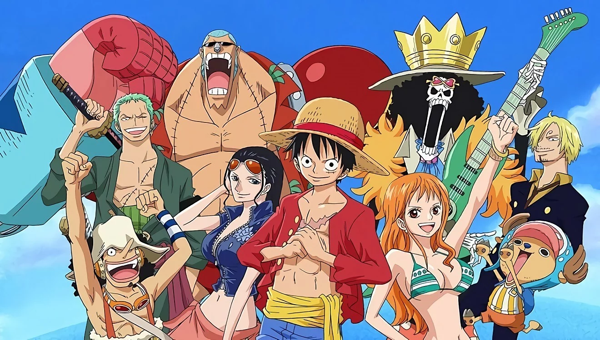

One Piece (ワンピース Wan Pīsu) als Anime geht auf das Jahr 1998 zurück, als anlässlich des vorjährigen Starterfolgs des Mangas One Piece in der
Shōnen Jump und des 30. Jubiläums der Jump Super Anime
Tour eine 30-minütige OVA produziert wurde. Im Jahr darauf begann die Produktion der Fernsehserie,
seitdem erschienen bereits über 900 Episoden. Zusätzlich wurden von Tōei Animation bisher dreizehn Filme, über zehn Fernsehspecials sowie einige
Original Video Animations und Kurzfilme produziert.
Einzelne Firmen entwickelten zahlreiche Merchandising-Artikel, unter anderem Sammelkartenspiele sowie
eine hohe Anzahl von Videospielen für gängige Konsolen. Mit einem Umsatz von 21 Milliarden US-Dollar ist One Piece eines der
erfolgreichsten Medienfranchises weltweit.

Handlung
Die Handlung der Fernsehserie stimmt über weite Teile mit der des Originalmangas überein. Unterschiede sind in der Einleitung der Geschichte, aber auch gerade zu
Beginn im Punkt des dargestellten Gewaltanteils auszumachen: So werden die ersten Kapitel des Mangas als Rückblende gezeigt, als Ruffy seinem ersten Gefolgsmann
Zorro davon erzählt, warum ihm sein Strohhut so wichtig ist. Der Test, ob Ruffy ein Pirat ist, beschränkt sich hier auf einen Scherz, den sich Ruffys Vorbild mit ihm
erlaubt. Eine weitergehende Änderung in der Handlung betrifft die sogenannten Filler (Füllepisoden), welche die eigentliche Handlung
durch zusätzliche Elemente und Abenteuer aufstocken, damit die Fernsehausstrahlung im Vergleich zum Originalmanga nicht zu schnell voranschreitet.